Ce document est mis à disposition par GeoViennAgglo selon les termes de la Licence Creative Commons Paternité - Partage à l'Identique 2.0 France.
Document modifié depuis le kit de formation de GeoBretagne
Rechercher l'existence d'une donnée via le catalogue, consulter et exporter sa fiche de métadonnées, la visualiser, la télécharger.
Ajouter une couche d'informations dans le visualiseur ( à partir du catalogue GeoViennAgglo, à partir d'un serveur OGC distant pré-enregistré ou non).
Manipuler une couche d'informations dans le visualiseur de GeoViennAgglo et utiliser les fonctionnalités de base (zoom, mesure, affichage/désaffichage de couches, ordre des couches, géolocalisation, impression, enregistrement de cartes, etc.).
À partir de la page d'accueil de GeoViennAgglo (http://geo.viennagglo.fr/). Bloc à gauche «Consulter – Catalogue GeoViennAgglo » :
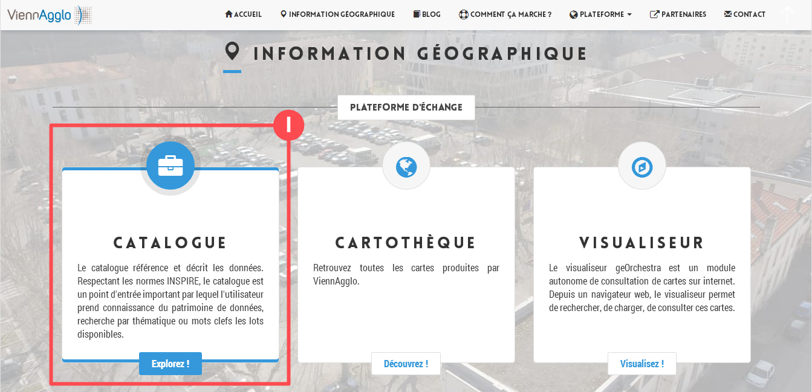Accès au catalogue de données de GeoViennAgglo
Pastille 1 : Fonctionnalité de recherche de données par mot(s)-clé(s),
Pastille 2 : Fonctionnalité de recherche de données par emprise géographique,
Pastille 3 : Fonctionnalités de recherche avancée,
Pastille 6 : Nuage de mots clés apparaissant fréquemment dans les fiches de métadonnées,
Pastille 7 : accès via login/mot de passe pour les partenaires identifiés.
Exemple : mot-clé = transport
Résultats = 2
En cliquant sur le nom de la fiche :
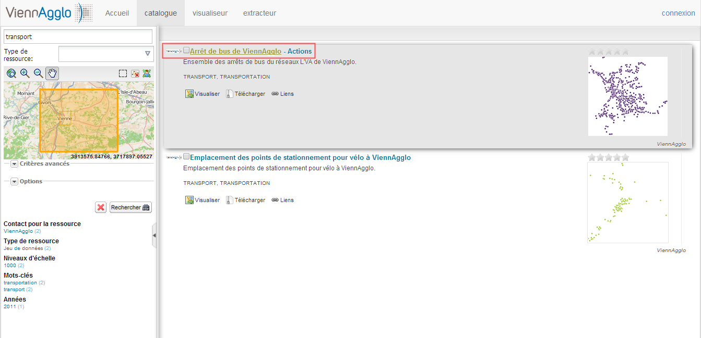On peut ainsi en ressortir toutes les informations nécessaires à l'exploitation des données (producteur, point de contact, généalogie, précision, conditions de diffusion, etc.).
On notera que dans le menu affichage, il existe plusieurs vues :
En cliquant sur Actions (cf imprim écran) on peut faire un export de la fiche de métadonnées au format PDF et transmettre ainsi ces informations à un partenaire ou un prestataire. L'export xml est également possible.
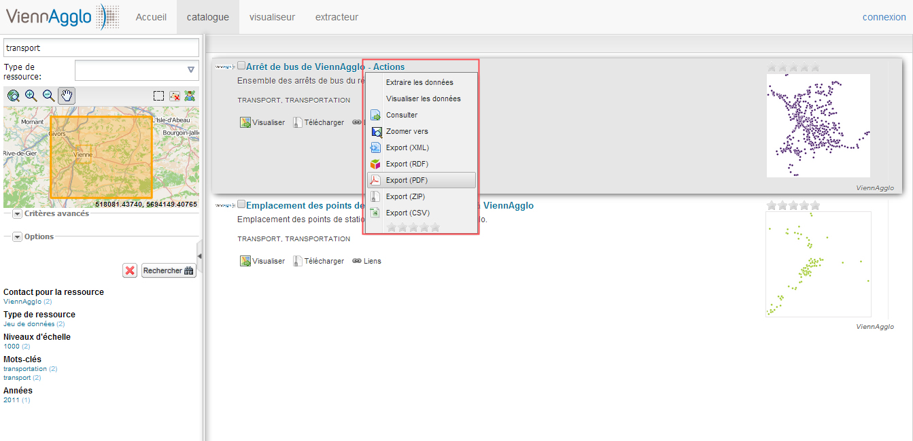Si elle est stockée, la donnée est téléchargeable directement à partir du catalogue pour être visualisable sur un SIG en local. Le fichier téléchargé sera au format zip et il contiendra les données au format shape en Lambert 93 Conique Conforme Zone 4 - CC45
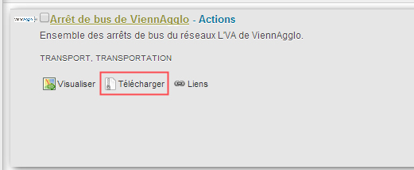En cliquant sur ce bouton, vous pourrez visualiser la couche directement dans le visualiseur de GeoViennAgglo
La couche a bien été chargé !
Le plus simple moyen est celui que nous venons de voir (fin de la partie 1) en cliquant sur le bouton propre à chaque couche. Si le bouton n'apparaît pas sur la fiche c'est que la donnée n'est pas visible.
Après avoir trouvé les couches d'informations qui vous intéresse dans le catalogue, vous pouvez basculer dans la partie visualiseur
Pour cela, il faut cocher les couches que vous souhaitez basculer dans le visualiseur de GeoViennAgglo
Cliquer sur "Autres Actions" -> "Visualiser les données" (en haut à droite)
Les couches sont alors importées dans le visualiseur :
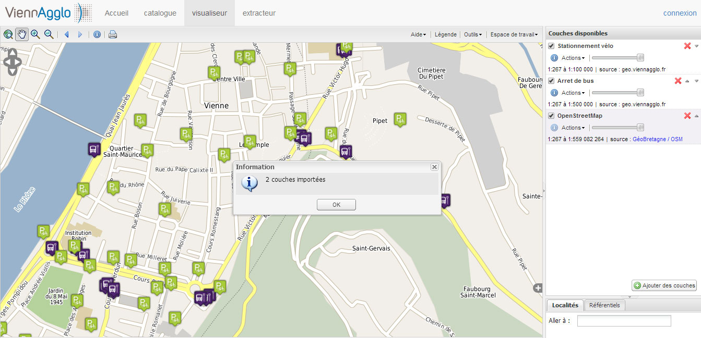L'autre possibilité pour ajouter une couche au visualiseur est de rechercher directement à partir de l'interface du visualiseur
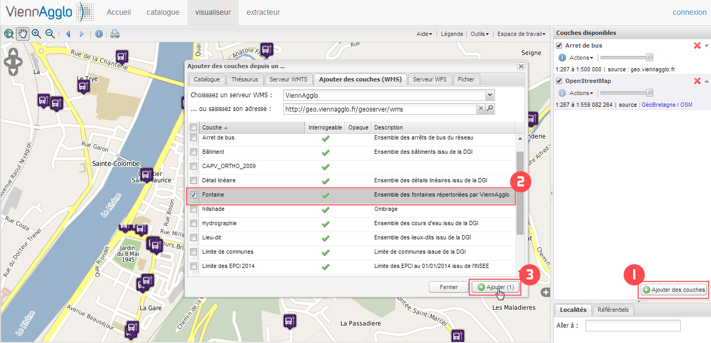Pastille 1 : cliquer sur le bouton "Ajouter des couches",
La boîte de dialogue "Ajouter des couches depuis un..." s'ouvre !
Pastille 2 : choisir la couche ou les couches que l'on souhaite ajouter,
Pastille 3 : cliquer sur le bouton "Ajouter".
Ouvrir la boîte de dialogue "Ajouter des couches depuis un..." comme nous l'avons vu sur le slide précédent. Se rendre sur l'onglet "Catalogue" qui, par défaut, attend un mot-clé de la part de l'utilisateur.
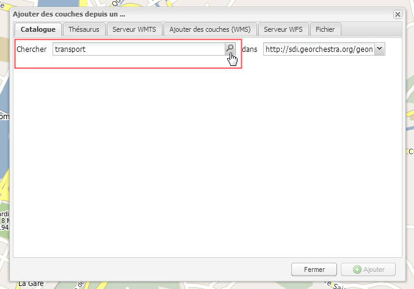Une fois un ou plusieurs mot(s)-clé(s) entré(s), vous appuyez sur la touche « entrée » ou cliquez sur le bouton "loupe".
L'application vous propose alors l'ensemble des fiches trouvées correspondant au(x)mot(s)-clé(s).
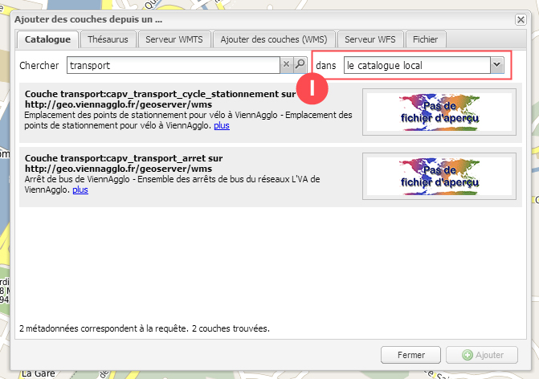Attention, avant d'effectuer sa recherche, il faut au préalable sélectionner dans quel catalogue l'on souhaite réaliser la recherche. Ici, nous voulons rechercher toutes les fiches contenant le mot-clé "transport" dans le catalogue de GeoViennAgglo, donc dans le catalogue local (pastille 1).
L'application vous propose alors l'ensemble des fiches trouvées correspondant au(x)mot(s)-clé(s).
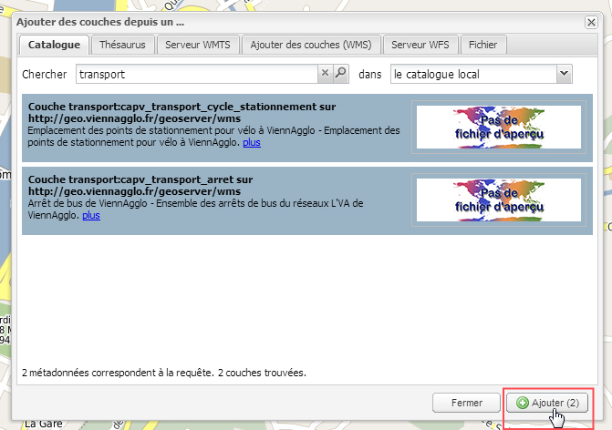Vous sélectionnez ensuite la ou les couche(s) qui vous intéresse(nt) en cliquant dessus (elles passent alors avec un fond bleu). Le lien « plus » permet à tout moment de basculer vers le catalogue pour consulter la fiche complète de métadonnées.
Pour afficher la(les) couche(s) dans le visualiseur, il suffit de la(les) cocher et de cliquer sur le bouton "Ajouter" (avec entre parenthèses le nombre de couches sélectionnées).
Il est possible d'utiliser des préfixes pour faire une recherche sur un champ en particulier
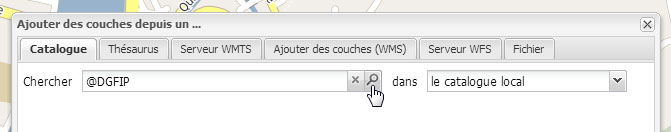Dans la fenêtre du Géocatalogue, choisissez l'onglet "Thesaurus" qui s'ouvre alors sur le navigateur de couches classé par défaut selon les thématiques de GeoViennAgglo.
Le lien "en bleu" permet à tout moment de basculer vers le catalogue pour consulter la fiche complète de métadonnées.
Pour afficher la (les) couche(s) dans le visualiseur, il suffit de la(les) cocher et de cliquer sur le bouton "Ajouter" (Pastille 1).
Notre couche des EPCI à bien été ajouté !
Il est également possible de visualiser une donnée stockée sur un serveur OGC distant
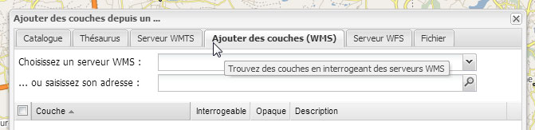Toujours dans « ajouter des couches », vous pouvez cliquer sur l'onglet "Ajouter des couches (WMS)" et 2 possibilités s'offrent à vous.
Solution 1 : Choix dans serveur OGC pré-enregistré dans la liste déroulante
Solution 2 : Saisir directement une adresse libre de service OGC dans la ligne prévue à cet effet